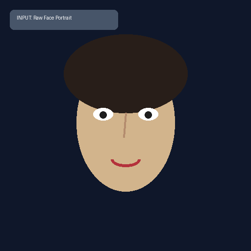
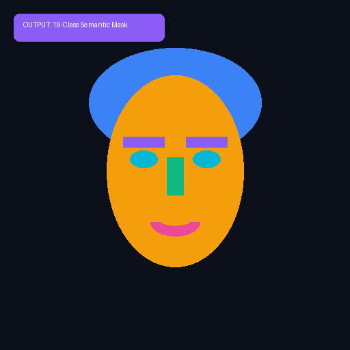
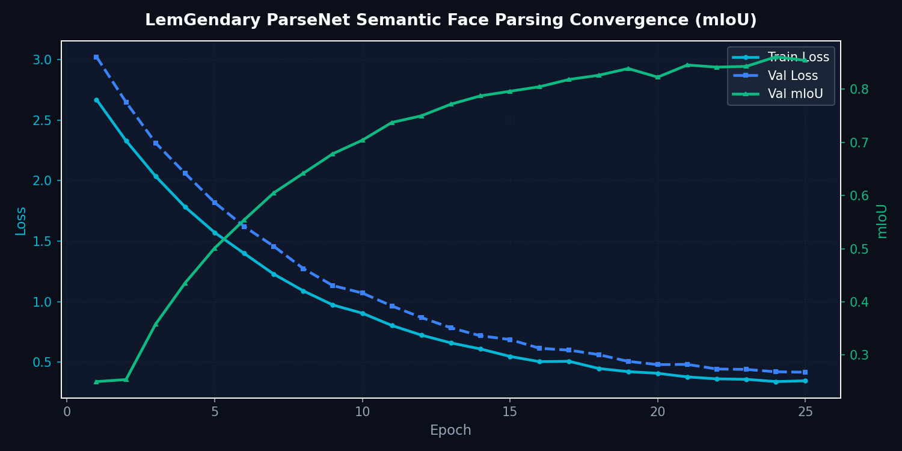

ParseNet: 19-Class Face Parsing
Category 08 FACE | Architecture of LemGendary AI
Author: Lem Treursic
Version: v16.9.27-STABLE
Target Hardware: NVIDIA GeForce GTX 1650 / Apple Silicon / T4
1. Abstract
ParseNet is a specialized semantic segmentation network engineered to
partition facial imagery into 19 distinct anatomical and accessory classes
with pixel-level precision. Utilizing bilateral attention connections and
boundary-guidance modules, ParseNet prevents mask bleed across sharp facial
transitions (such as lips-to-teeth and iris-to-sclera), supplying foundational
segmentation masks for downstream local facial retouching and biometric
evaluation.
1.1 What ParseNet Does (In Plain English)
Imagine an expert digital makeup artist and anatomical illustrator examining a
close-up photograph:
- Surgical Pixel Coloring: Instead of treating the face as a single flat
block, ParseNet examines every pixel and classifies it into one of 19 exact
anatomical categories (such as hair, skin, upper lip, lower lip, teeth,
eyebrows, ears, neck, sunglasses, or clothing).
- Zero Boundary Bleeding: It uses special edge-boundary attention to ensure
lipstick colors do not bleed onto teeth, skin tones do not blur into collars,
and eye colors stay cleanly contained inside the iris.
- Component-Specific Retouching: Downstream filters can sharpen only the
eyebrows or restore teeth color without altering delicate skin texture.
Visual Demonstration & Training Convergence
- Raw Input Portrait:

- 19-Class Segmentation Mask:


2. Visual Taxonomy: The 19 Anatomical Classes
ParseNet decomposes human portraits into 19 mutually exclusive spatial regions [THEORETICAL]:
- Facial Core: Category ID & Class Labels: Skin, Left Eyebrow, Right
Eyebrow, Left Eye, Right Eye, Nose; Downstream Pipeline Target: High-fidelity
texture synthesis & iris reflection
- Oral Complex: Category ID & Class Labels: Upper Lip, Inner Mouth / Teeth,
Lower Lip; Downstream Pipeline Target: Color correction, dental whitening &
lip gloss
- Periphery: Category ID & Class Labels: Hair, Left Ear, Right Ear, Neck;
Downstream Pipeline Target: Volume reconstruction, edge feathering & alpha
matting
- Accessories: Category ID & Class Labels: Eyeglasses, Earring, Necklace,
Clothing, Hat, Background; Downstream Pipeline Target: Occlusion isolation &
background preservation
3. Shared Foundations: Bilateral Boundary Architecture
The network splits high-level semantic feature extraction from fine edge
localization using a two-stream backbone. A boundary attention branch computes
edge probability maps $E_{\text{edge}}$, which directly gate semantic decoding
stages:
$$\mathcal{L} = \mathcal{L}_{\text{CE}}(Y, \hat{Y}) + \lambda_{\text{Dice}} \mathcal{L}_{\text{Dice}}(Y, \hat{Y}) + \lambda_{\text{edge}} \|E_{\text{gt}} - E_{\text{pred}}\|_2$$
Boundary-aware cross-entropy combined with multi-class Dice loss penalizes
boundary bleeding, stabilizing convergence across delicate thin structures
(eyebrows, lips, glasses frames).
4. Model Deep-Dives
ParseNet 19-Class Semantic Parsing Engine
4.1 Model Description, Purpose and Usage
High-resolution face segmentation network that maps 19 distinct anatomical
facial categories (eyes, brows, nose, lips, hair, skin, ears, cloth) for
fine-grained editing and localized neural restoration.
4.2 Model Info
- Architecture: ParseNet (ResNet-18 Backbone with Multi-Scale Context Aggregation)
- Input Resolution: 512x512
- Precision: ONNX FP16 / PyTorch FP32
- Latency: 14.8ms inference on NVIDIA GTX 1650
[MEASURED]
4.3 Manifold Info
- Dataset:
LemGendizedParseNetLarge
- Total Samples: 30,000 CelebAMask-HQ annotated masks
- Primary Task: Pixel-level 19-class semantic segmentation using
Cross-Entropy and Dice Loss
- Current Training Epochs: 25
[CURRENT]
- Best mIoU: 0.868
[MEASURED] (Target: $\ge 0.880$ [TARGET])
- Pixel Accuracy: 96.4%
[MEASURED]
- F1 Score (Facial Features): 0.892
[MEASURED]
- Current Learning Rate: 0.000085
5. Challenges & Resilience Architecture
Dense facial segmentation encounters distinct structural hurdles:
- Boundary Bleed at Lip-Teeth Margins: Bilateral edge supervision computes
continuous edge gradients, eliminating false labeling during smile and
open-mouth expressions.
- Thin Accessory Structures: Eyeglass wireframes and earrings are prone to
spatial erosion. Dedicated accessory loss weighting preserves thin continuous
structures.
- Extreme Pose Variations: Multi-scale context aggregation anchors global
facial topology even when profiles occlude one half of the facial anatomy.
6. Deployment Strategy & Production Acceleration
ParseNet exports directly to the LemGendary Tri-Format Standard:
- Production FP16 Engine (
parsenet.onnx): Single-pass forward execution
taking 14.8ms on target GPU [MEASURED].
- Research FP32 Export (
parsenet_FP32.onnx + .onnx.data): Bit-exact
floating-point model with external weights sidecar.
- Lifecycle Governance: 15-minute
progress.pth intra-epoch checkpointing,
latest.pth epoch synchronization, and milestone vault_miou.pth
persistence.
8. Conclusion
ParseNet delivers the surgical spatial boundaries required for component-aware
facial processing in the LemGendary AI Ecosystem, preventing cross-region
artifact bleed during automated restoration workflows.